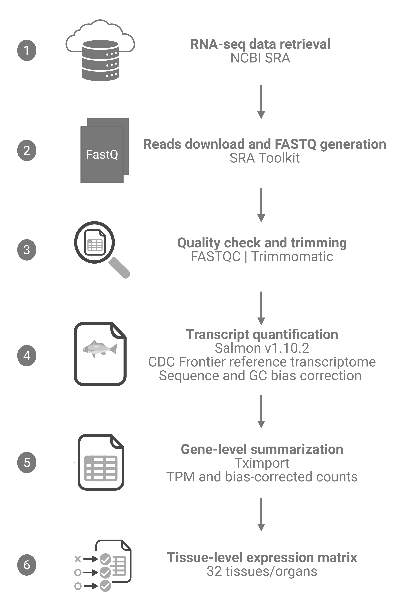

Expression eFP View
Type a gene ID and click Load gene.
Expression across selected tissues
Mean and median expression across selected genes
Gene expression heatmap
Candidate genes within selected SNP region
TF search results
Selected TF
Click a row in the TF results table.
TF assignment evidence
Largest transcription-factor families
High-confidence TF marker genes by tissue
TF-family expression across tissues
Gene Ontology enrichment results
Statistical method
One-sided Fisher’s exact test (hypergeometric upper tail) for over-representation of each GO term in the foreground relative to the background, computed in the browser. P-values are adjusted within each gene set and ontology/database using the selected correction (default Benjamini–Hochberg; the adjusted value is reported as Adjusted_P). Only terms with at least the minimum number of foreground genes are tested; gene sets with fewer than five annotated genes are not tested. Fold enrichment = (foreground genes with the term / annotated foreground) / (background genes with the term / annotated background). Annotations: CDC Frontier v2.0 (gnm2.ann1) GFF3 and InterProScan; GO names from GO.db.
Functional annotation results
Statistical method
One-sided Fisher’s exact test (hypergeometric upper tail) for over-representation of each InterPro entry or Pfam family in the foreground relative to the background, computed in the browser. P-values are adjusted within each gene set and ontology/database using the selected correction (default Benjamini–Hochberg; the adjusted value is reported as Adjusted_P). Only terms with at least the minimum number of foreground genes are tested; gene sets with fewer than five annotated genes are not tested. Fold enrichment = (foreground genes with the term / annotated foreground) / (background genes with the term / annotated background). Annotations: CDC Frontier v2.0 (gnm2.ann1) GFF3 and InterProScan; GO names from GO.db.
Editable chickpea chromosome maps
Each selected chromosome is drawn as a separate map with JPG download.
Combined marker table
Atlas Downloads
Click a dataset card to download the file.
CicerExpress
Interactive chickpea expression atlas
Tennessee State University
Version 1.0
About CicerExpress
CicerExpress is an interactive expression atlas and web resource developed to visualize gene expression patterns across 32 chickpea tissues and developmental stages. The resource allows users to search individual genes, view tissue-specific expression using an eFP-style atlas, generate expression bar plots, create heatmaps for selected genes, summarize mean and median expression, identify candidate genes near GWAS-associated SNPs, perform Gene Ontology enrichment, examine functional and protein-domain enrichment, and create editable chickpea chromosome maps.
This resource is designed to support candidate gene prioritization, transcriptomic interpretation, seed trait-related functional genomics, GWAS visualization, and molecular breeding research in chickpea.
Development Team
College of Agriculture, Tennessee State University, Nashville, TN, USA
Email: sushantpy8500@gmail.com
ORCID: 0000-0003-3987-5616
College of Agriculture, Tennessee State University, Nashville, TN, USA
Email: kshivash@my.tnstate.edu
Faculty Advisors
College of Agriculture, Tennessee State University, Nashville, TN, USA
Email: lwalla10@tnstate.edu
ORCID: 0000-0002-6985-5854

College of Agriculture, Tennessee State University, Nashville, TN, USA
Email: ali.taheri@tnstate.edu
ORCID: 0000-0002-4019-7982

Credit and Data Source
The RNA-seq data used in this resource were obtained from the publicly available chickpea transcriptome dataset deposited under NCBI BioProject PRJNA622231 (https://www.ncbi.nlm.nih.gov/bioproject/PRJNA622231). This dataset includes transcriptomic profiles from 32 tissues and developmental stages of chickpea cultivar ICC4958 and served as the source of the raw sequencing data used for the analyses presented in this atlas.
Reference:
Jain M, Bansal J, Rajkumar MS, Garg R. An integrated transcriptome mapping the regulatory network of coding and long non-coding RNAs provides a genomics resource in chickpea. Communications Biology. 2022;5:1106. PMID: 36261617.
Transcriptomic Analysis

Publicly available RNA-seq data from BioProject PRJNA622231 (94 libraries, 32 tissues and developmental stages of cultivar ICC4958) were quantified against the CDC Frontier v2.0 reference annotation. The original study generated and released the RNA-seq data; read processing, expression quantification, expression classification, marker and housekeeping gene identification, transcription-factor annotation, data integration and web-resource development were performed for CicerExpress.
Raw sequencing reads were downloaded from the NCBI Sequence Read Archive using the SRA Toolkit and converted into paired-end FASTQ files. Transcript-level abundance was estimated using Salmon v1.10.2. A Salmon index was generated from the CDC Frontier reference transcriptome file. Salmon quantification files were imported into R using tximport, transcript-level estimates were summarized to gene-level TPM, and tissue-level median TPM values were calculated across biological replicates (mean TPM is also provided in Downloads). All gene identifiers and coordinates follow the CDC Frontier v2.0 reference genome and annotation (cicar.CDCFrontier.gnm2.ann1.9M1L) from the Legume Information System.
Website Development
The atlas website was developed as a static web application using HTML, CSS, JavaScript, CSV data, and a custom SVG-based chickpea tissue diagram. Tissue-specific SVG elements are dynamically colored based on selected gene expression values.
The website also includes modules for bar plots, heatmaps, mean and median expression summaries, downloadable figures, single and batch GWAS candidate-gene searches using chromosome, SNP position and upstream/downstream genomic windows, GO and InterPro/Pfam enrichment (one-sided Fisher’s exact test with Benjamini–Hochberg, Bonferroni or no correction, and selectable background gene sets), predefined gene-set selection from expression classes, tissue groups, individual tissues, marker genes, and housekeeping candidates, and an editable chickpea chromosome mapper based on reference chromosome lengths.
Cite This Atlas
Yadav, S. P. S., Shivashakarappa, K., Taheri, A., & Wallace, L. T. (2026). CicerExpress: an interactive expression atlas for tissue-specific gene discovery, candidate-gene prioritization and functional enrichment in chickpea. Manuscript submitted. https://legumehub.github.io/CicerExpress/